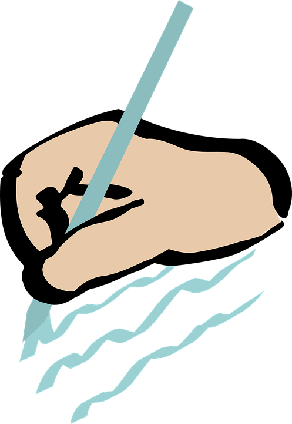
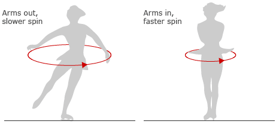

Extend Yourself - Geometric Shapes: Spinning Tops
 Write the Manufacturer
Write the Manufacturer
 Was there a way that you could improve your spinning top? Did you have the pieces to do it? How could Learning Resources improve the Geometric Shapes Building Set? What pieces could they add? Could they change the design of the ball?
Principles of Physics
- Another principle of physics says that energy cannot be created or destroyed; it can only be converted to another type of energy, or transferred to another object. Where did the energy come from that you transferred to the top when you started it spinning? Where did it go?
- Conservation of angular momentum also explains why skaters spin faster when they bring their arms closer to their bodies. Go online to learn more.

More About Tops
- How is a Yo-Yo like a top? How is it different? What about a hula-hoop?
- Tops have been used as toys for thousands of years. Go online to learn more about their history. What are some world records for spinning tops?

Build More Bar Graphs
Bar graphs are useful tools to show important information. Build a bar graph to share important information like how many hours do you spend on each activity each day?
- School
- Eating
- Playing
- Watching TV
- Sleeping
- Chores
- Homework
Use this Interactive Bar Graph website to make a bar graph to show how you spend your time during a typical day. Scroll to the bottom of the website. Change the numbers to match how many hours you spend on each activity and then click Graph Data. How could this bar graph of your daily activity be useful to you? Is there a bar graph with different information you could create that would be useful to you?

More About Tops
- How is a Yo-Yo like a top? How is it different? What about a hula-hoop?
- Tops have been used as toys for thousands of years. Go online to learn more about their history. What are some world records for spinning tops?